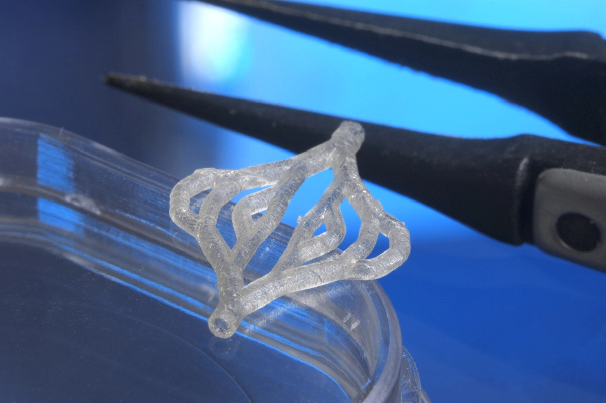

Características de los Vasos Sanguíneos para transplantes

Características de los Vasos Sanguíneos para transplantes | |
| Son llamados: "injertos vasculares de tejido alogénico regenerado", son capas de tejido con células de la piel donadas que se colocan en una estructura de apoyo, similar a un andamio, en forma de tubo. tienen el potencial de lograr que los tratamientos de diálisis y otros procedimientos, como la reparación de arterias dañadas y defectos cardíacos, sean "más rentables". Además, como para la creación del tejido se pueden utilizar las propias células del paciente. | |